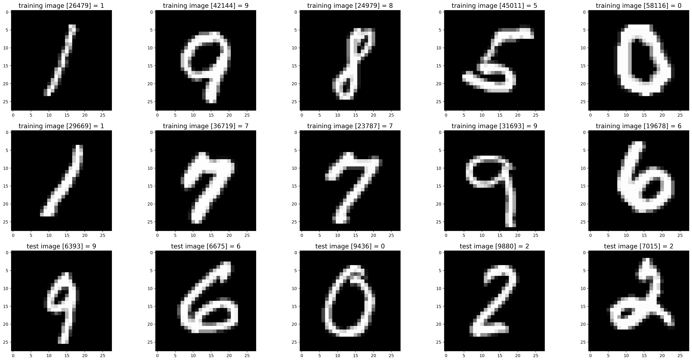
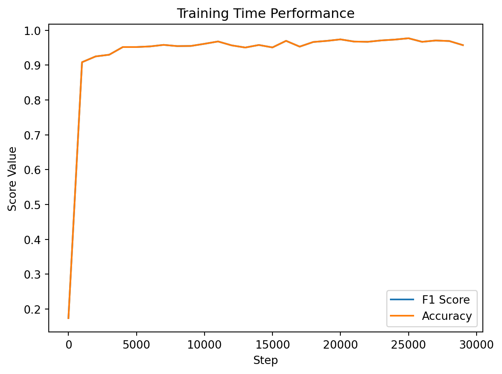
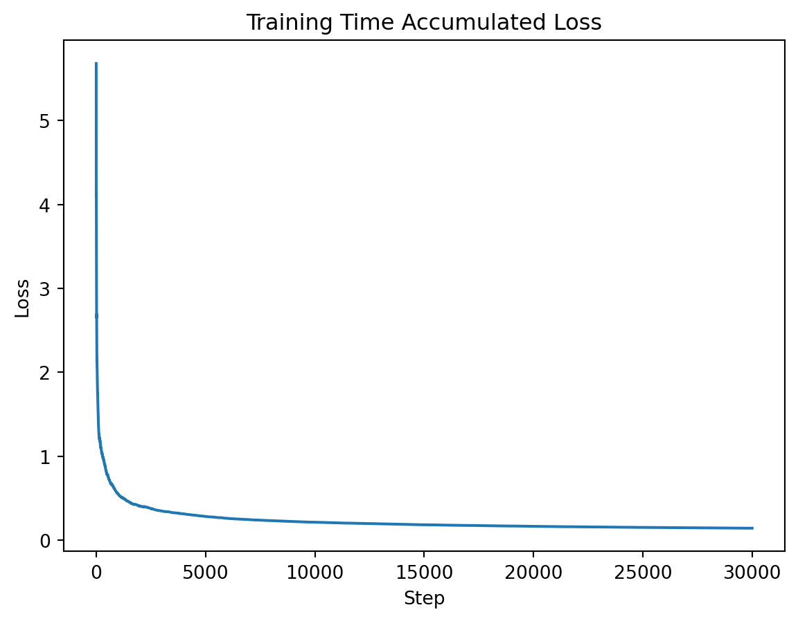

import numpy as np
import struct
from array import array
from os.path import join
# MNIST Data Loader Class
class MnistDataloader(object):
def __init__(self, training_images_filepath, training_labels_filepath,
test_images_filepath, test_labels_filepath):
self.training_images_filepath = training_images_filepath
self.training_labels_filepath = training_labels_filepath
self.test_images_filepath = test_images_filepath
self.test_labels_filepath = test_labels_filepath
@staticmethod
def read_images_labels(images_filepath, labels_filepath):
labels = []
with open(labels_filepath, 'rb') as file:
magic, size = struct.unpack(">II", file.read(8))
if magic != 2049:
raise ValueError('Magic number mismatch, expected 2049, got {}'.format(magic))
labels = array("B", file.read())
with open(images_filepath, 'rb') as file:
magic, size, rows, cols = struct.unpack(">IIII", file.read(16))
if magic != 2051:
raise ValueError('Magic number mismatch, expected 2051, got {}'.format(magic))
image_data = array("B", file.read())
images = []
for i in range(size):
images.append([0] * rows * cols)
for i in range(size):
img = np.array(image_data[i * rows * cols:(i + 1) * rows * cols])
img = img.reshape(28, 28)
images[i][:] = img
return images, labels
def load_data(self):
x_train, y_train = self.read_images_labels(self.training_images_filepath, self.training_labels_filepath)
x_test, y_test = self.read_images_labels(self.test_images_filepath, self.test_labels_filepath)
return (x_train, y_train), (x_test, y_test)Image Classification Using a Neural Network
Bio-mimicry serves as a design approach, guiding engineers and scientists to solve problems by drawing inspiration from nature. Neural networks stand among the various manifestations of this concept. They employ mathematical functions to emulate the behavior of brain neurons, adjusting connections based on their performance—a process reminiscent of the strengthening of brain synapses in response to stimuli.
Despite the recent surge in attention surrounding neural networks, their roots trace back to the mid-20th century. Early research laid the foundation, yet it was the increased computational power and the advent of the GPU that allowed artificial neural networks to become more practical. Consequently, they found applications across diverse fields, proving particularly successful in realms like image recognition and natural language processing.
In this blog, we will build and train a basic neural network with the goal of teaching it to discern numbers within monochrome images. This example may seem simple and redundant as similar results can be achieved through various other techniques. However, its simplicity serves as a valuable learning experience—an introduction to the intricate workings of neural networks. As we delve into this endeavor, we aim to demystify the complexities, making the understanding of neural networks more accessible through a practical and illustrative example.
The Data!
Summary of the Data
For training and evaluation of our neural network, we will be using the popular MNIST dataset. The MNIST dataset comprises various \(28 \times 28\) images of handwritten numbers from 0 through 9 in a monochrome format with values from 0 to 255. This copy of the MNIST dataset was taken from kaggle. The data is stored in a particularly interesting format, so we will be using the provided example to unpack the dataset.
%matplotlib inline
import random
import matplotlib.pyplot as plt
# Set file paths based on added MNIST Datasets
input_path = '/Users/danielsabanov/Documents/VT_Notes/9th_Semester/ML1Blog/Post4/MNIST' # YOU WILL NEED TO MODIFY THIS
training_images_filepath = join(input_path, 'train-images-idx3-ubyte/train-images-idx3-ubyte')
training_labels_filepath = join(input_path, 'train-labels-idx1-ubyte/train-labels-idx1-ubyte')
test_images_filepath = join(input_path, 't10k-images-idx3-ubyte/t10k-images-idx3-ubyte')
test_labels_filepath = join(input_path, 't10k-labels-idx1-ubyte/t10k-labels-idx1-ubyte')
# Helper function to show a list of images with their relating titles
def show_images(images, title_texts):
cols = 5
rows = int(len(images) / cols) + 1
plt.figure(figsize=(30, 20))
index = 1
for x in zip(images, title_texts):
image = x[0]
title_text = x[1]
plt.subplot(rows, cols, index)
plt.imshow(image, cmap=plt.cm.gray)
if (title_text != ''):
plt.title(title_text, fontsize=15)
index += 1
# Load MINST dataset
mnist_dataloader = MnistDataloader(training_images_filepath, training_labels_filepath, test_images_filepath,
test_labels_filepath)
(x_train, y_train), (x_test, y_test) = mnist_dataloader.load_data()
# Show some random training and test images
images_2_show = []
titles_2_show = []
for i in range(0, 10):
r = random.randint(1, 60000)
images_2_show.append(x_train[r])
titles_2_show.append('training image [' + str(r) + '] = ' + str(y_train[r]))
for i in range(0, 5):
r = random.randint(1, 10000)
images_2_show.append(x_test[r])
titles_2_show.append('test image [' + str(r) + '] = ' + str(y_test[r]))
show_images(images_2_show, titles_2_show)
If you want to work with the provided dataset, you will need to modify the input path to the location where you store your data. Alternatively, various libraries, such as Scikit-Learn and PyTorch provide their own versions of the data. In my case I am using the version from Kaggle because it will also provide practice in converting the dataset to a format that works with PyTorch. Now lets examine the distribution of the digits within both the training and testing sets.
digit_counts_train = {digit: y_train.count(digit) for digit in range(10)}
digit_counts_test = {digit: y_test.count(digit) for digit in range(10)}
fig_train, ax_train = plt.subplots()
ax_train.bar(digit_counts_train.keys(), digit_counts_train.values(), color='skyblue')
ax_train.set_xlabel('Digit')
ax_train.set_ylabel('Number of Data Points')
ax_train.set_title('Number of Data Points for Each Digit in MNIST training partition')
plt.show()
fig_test, ax_test = plt.subplots()
ax_test.bar(digit_counts_test.keys(), digit_counts_test.values(), color='skyblue')
ax_test.set_xlabel('Digit')
ax_test.set_ylabel('Number of Data Points')
ax_test.set_title('Number of Data Points for Each Digit in MNIST training partition')
plt.show()We can see that the digit labels in both the training and testing partitions are roughly evenly distributed. This means that there should be minimal bias in the results, and there is no need to try to balance the data. Now, let’s convert the data to a format PyTorch is able to work with.
Converting the Data
PyTorch has a very nice API for working with datasets. It requires the user to define a subclass of torch.utils.data.Dataset, this subclass must contain implementations for the following functions: __init__, __len__, and __getitem__. Let us build one such dataset class.
import torch
class MNISTDataset(torch.utils.data.Dataset):
def __init__(self, x, y):
self.x_tensor = torch.tensor(x, dtype=torch.float32)
self.y_tensor = torch.tensor(y, dtype=torch.long)
def __len__(self):
assert len(self.x_tensor) == len(self.y_tensor)
return len(self.y_tensor)
def __getitem__(self, item):
image = torch.unsqueeze(self.x_tensor[item, :, :], 0)
label = self.y_tensor[item]
return image, labelLet’s address a few nuances in our dataset definition. First of all, observe that we are creating two types of tensors. The first, called x_tensor contains a tensor that stores number images in the float32 format. This is because, as you will see, the first layer of our neural network is a 2-dimensional convolution layer. According to PyTorch documentation, it expects the inputs to be in float32 format. The second tensor, called y_tensorthat stores the labels uses torch.long format. This is done for ease of interaction with our loss function. I will be explaining more about it once we reach it.
Now, I want you to observe that we are unsqueezing the image when we return it from __getitem__. This is done also due to the restrictions posed by the convolution layer. According to its documentation, the dimensions of the input must be shaped as (batch size, number of channels, height, width). The batch size will be handled by our data loader, which we will shortly implement. However, the number of channels is for us to handle. The number of channels represents the number of values that are used to define the color of a single pixel. For example, an image in RGB format would have three channels. Since MNIST is monochrome, we need the number of channels to be 1. We can do so using the unsqueeze function. Now let’s handle batching…
train_data = MNISTDataset(x_train, y_train)
test_data = MNISTDataset(x_test, y_test)
BATCH_SIZE = 4
train_loader = torch.utils.data.DataLoader(train_data, batch_size=BATCH_SIZE)
test_loader = torch.utils.data.DataLoader(test_data, batch_size=BATCH_SIZE)/var/folders/1n/_w4rlkb92pq1mwmj66_byr080000gn/T/ipykernel_17628/2513850566.py:6: UserWarning: Creating a tensor from a list of numpy.ndarrays is extremely slow. Please consider converting the list to a single numpy.ndarray with numpy.array() before converting to a tensor. (Triggered internally at /Users/runner/work/pytorch/pytorch/pytorch/torch/csrc/utils/tensor_new.cpp:264.)
self.x_tensor = torch.tensor(x, dtype=torch.float32)The torch.utils.data.DataLoader class provides batching functionality. Batching is used to feed multiple inputs into a neural network at once. This is done because it is actually more efficient to do so. Since GPU is a parallel architecture, we gain a training speedup by feeding multiple inputs at once. Let’s verify that our input into the network is of appropriate size.
next(iter(train_loader))[0].size()torch.Size([4, 1, 28, 28])Neural Networks Background
The architecture is typically used for image recognition is a Convolutional Neural Network (CNN). They are like regular neural networks, but convoluted! More seriously, a CNN typically consists of several convolution layers (do not worry, I will explain what it is soon) followed by linear layers. A basic way to think about CNNs is as if they were a pipeline of matrix and vector operations.
The Convolution Layer
A convolution operation is actually trivial in nature. It is the process of passing a larger matrix through a smaller filter matrix. Still sounds like a word salad? It is easier when one visualizes it. Say we have a matrix of size \(3 \times 3\) and a filter of size \(2 \times 2\). \[ A = \left[ \begin{matrix} a_1 & a_2 & a_3\\ a_4 & a_5 & a_6\\ a_7 & a_8 & a_9\\ \end{matrix} \right] \] \[ filter = \left[ \begin{matrix} f_1 & f_2 \\ f_3 & f_4 \\ \end{matrix} \right] \] Let our result be \[ R = \left[ \begin{matrix} r_1 & r_2 \\ r_3 & r_4 \\ \end{matrix}\right] \]
Then, our \(r_1\) would be the sum of the products of the numbers in the top left corner of \(A\) (\(a_1\), \(a_2\), \(a_4\), \(a_5\)) that can be overlapped by the filter. \[ r_1 = a_1 \times f_1 + a2 \times f_2 + a_4 \times f_3 + a_5 \times f_4 \] We will do the same for the top right corner of \(A\) \[ r_2 = a_2 \times f_1 + a3 \times f_2 + a_5 \times f_3 + a_6 \times f_4 \]
This pattern will continue until all of \(A\) passes through the filter. ### The Linear Layer The linear layer is even simpler. It is called linear because it represents a linear equation. That means that given an input \(X\), the output will be \[ \vec{f(x)} = W \vec{x} + \vec{b} \] where \(W\) represents the weights and \(b\) represents bias. Both the weight and the bias will be the values that the network will be learning.
Building the Neural Network!
Now that we have a general understanding of how CNNs function, we should try and build one. Pytorch represents models as classes containing an initialization method and a “forward” method. Initialization is pretty self-explanatory, it is the initialization function that initializes all the layers. The “forward” may sound a bit cryptic, but it is also very trivial. It is a method that describes how the data is propagated forward through the network. Finally, every Neural Network also has to have a backwards pass to adjust the weights of the model. This is done by a method automatically generated by PyTorch—the “backward” method.
from torch.nn import functional as F
from torch import nn
class NumberClassifier(nn.Module):
def __init__(self):
super(NumberClassifier, self).__init__()
self.conv_layer1 = nn.Conv2d(1, 4, (3, 3))
self.conv_layer2 = nn.Conv2d(4, 8, (2, 2))
self.linear_layer1 = nn.Linear(288, 144)
self.linear_layer2 = nn.Linear(144, 72)
self.linear_layer3 = nn.Linear(72, 10)
def forward(self, x):
# First Layer
x = self.conv_layer1(x)
x = F.relu(x)
x = F.max_pool2d(x, (2, 2))
# Second Layer
x = self.conv_layer2(x)
x = F.relu(x)
x = F.max_pool2d(x, (2, 2))
# Third Layer
x = x.view(-1, self.num_flat_features(x))
x = self.linear_layer1(x)
x = F.relu(x)
# Fourth Layer
x = self.linear_layer2(x)
x = F.relu(x)
# Fifth Layer
x = self.linear_layer3(x)
return x
def num_flat_features(self, x):
num_features = 1
for s in x.size()[1:]:
num_features *= s
return num_featuresNow that we have assembled our model, let’s take a deeper look into the components, so I could explain what are the values that are being fed into each layer.
First Layer
The first convolution layer is initialized with the values 1, 4, and (3, 3). The first value, 1, represents the number of channels the number of channels that are being fed into the layer. Since our image is monochrome, we only need a single channel. The second value, 4, represents the number of output channels that we want from the layer. There is no specific reason for selecting this value other than the fact that 4 is greater than 1. It is generally considered better for convolution layers to output a larger number of channels than what they receive. (3, 3) is the size of the kernel, or what we previously referred to as a filter. One again, I picked it somewhat arbitrarily while making it square and of odd height and width to simplify the computations later on.
You can see that the output of the convolution is passed into something called a ReLU. ReLU is an acronym for Rectified Linear Unit, a function defined as
\[ f(x) = max(0, x) \]
We are using a ReLU function to introduce non-linearity to our neural network. There are many other functions that can be used instead of ReLU. However, ReLU is amongst the simplest activation functions and thus reduces the computation complexity-meaning it increases both inference and training speed. Non-linearity is important since if all the layers would be linear, the entire neural network would become a very convoluted representation of a linear function.
The output of ReLU is then passed into a two-dimensional max pool function. What it does is split its input matrix into multiple \(2 \times 2\) squares and select the maximum value out of each square. This allows the neural network to focus on the most prominent features in the image.
Second Layer
The second layer is very similar to the first layer. We now specify that the number of input channels is 4 since the output of the previous layer had four channels.
Third Layer
The third layer is simpler than the previous two. In this layer we accept a specific number of features, in this case 288, and pass it through our linear layer to the ReLU function. However, why do we accept 288 features specifically, and what are we doing before that? Were we not working with matrices previously? My answer to this question is-exactly! The first thing we do before we pass output from the previous layer into our linear layer is to flatten the tensors into vectors.
Now let’s calculate the dimensions of the tensor that gets out of the second layer. When a matrix goes through a 2d convolution, the output will be of size
\[ D_{out} = D_{in} - (kernel\_dim - 1) \]
Where D represents either the width or the height of the matrix (you are going to run this calculation once for each dimension). So, our new matrix is of size \(26 \times 26\).
We pass our matrix through a two-dimensional max-pool of size \(2 \times 2\). This reduces the size of each dimension by half. Our matrix is now of size \(13 \times 13\).
After passing through our next layer, the size becomes \(12 \times 12\) and then \(6 \times 6\). So each matrix has thirty-six values. We also have eight channels. So the total number of values to come out of the second layer is 288. The exact number we are feeding into our third layer.
Fourth Layer
This layer is even simpler that the previous layer since we do not have to flatten anything, we just pass the output from one side to the other.
Fifth Layer
Since this is the final layer, there is no need for the ReLU function as there is no need to avoid linearity. Since we are trying to classify our input into 10 classes, the output from this layer should also be split into 10 values. The index of the highest value will represent the class that the network is trying to predict.
Teaching the Network!
Now that we have defined our model, it is time to handle its training, as it will not be capable of classifying the digits accurately without training. First, we will create an instance of our network.
cnn = NumberClassifier()Now, I have mentioned GPUs several times in this post; how about we use one to train the network? To do so, we need a reference to our GPU, since in my case I am training the network on an M1 laptop, I will need to use the MPS backend. If you are training on an Nvidia GPU you will need to change the way you are getting the reference to the device. I encourage you to look through the PyTorch CUDA documentation to understand how to do that.
After we have a reference to the device, we will want to send our network to the said device. Do note that from now on you will also need to send all the tensors to the device as well!
device = torch.device("mps" if torch.backends.mps.is_available() else "cpu")
cnn.to(device)NumberClassifier(
(conv_layer1): Conv2d(1, 4, kernel_size=(3, 3), stride=(1, 1))
(conv_layer2): Conv2d(4, 8, kernel_size=(2, 2), stride=(1, 1))
(linear_layer1): Linear(in_features=288, out_features=144, bias=True)
(linear_layer2): Linear(in_features=144, out_features=72, bias=True)
(linear_layer3): Linear(in_features=72, out_features=10, bias=True)
)Next, we will define our loss metric and optimizer. The loss metric is used to help our model understand the measure by which it was wrong. Since we are using multiclass classification, we will want to use CrossEntropyLoss. Remember when we were discussing the reasoning for using long format for the true labels in our model and I said that it has to do with the way our loss function will work? Well, this is the explanation. Cross-entropy loss works with hot-encoded vectors, meaning our predictions vector and labels vector must be hot encoded. We could have hot encoded our labels, but that would have taken a little extra work. Luckily, PyTorch developers recognized that, so instead, CrossEntropyLoss is capable of hot encoding the labels by itself, as long as the labels are provided in the long format. This simplifies the work for us since we do not need to worry about encoding the labels anymore.
We should discuss the optimizer a little. The optimizer is used to adjust the weights of the model based on the loss function. It is what performs the gradient descent in the model. PyTorch offers many different optimizers. I have chosen the AdamW optimizer since it is the optimizer I see most often used. However, it may not be the perfect optimizer for this task. I encourage the reader to experiment with their own optimizers to perhaps find one that works better.
loss_metric = nn.CrossEntropyLoss()
optimizer = torch.optim.AdamW(cnn.parameters())Now that we have defined everything. It is time to train our network. To validate the performance of the model, we will be using the f1-score and accuracy metrics. We will run the model against the testing dataset in no grad mode (which means gradients will not be computed and the model will not remember the data) every 1000 steps. We will also do one validation run after the model finishes training.
from sklearn.metrics import f1_score, accuracy_score
def evaluate_performance(loader):
predictions_list = []
labels_list = []
for batch in loader:
image, label = batch
with torch.no_grad():
image = image.to(device)
outputs = cnn(image)
predictions = torch.argmax(outputs, dim=1)
predictions_list += predictions.tolist()
labels_list += label.tolist()
f1 = f1_score(labels_list, predictions_list, average="micro")
acc = accuracy_score(labels_list, predictions_list)
return f1, acc
NUM_EPOCHS = 2
losses = []
accuracies = []
f1_scores= []
for epoch in range(NUM_EPOCHS):
for i, data in enumerate(train_loader):
image, label = data
optimizer.zero_grad()
image = image.to(device)
label = label.to(device)
outputs = cnn(image)
loss = loss_metric(outputs, label)
losses.append(loss.item())
loss.backward()
optimizer.step()
if i % 1000 == 0:
print(f"The current step is {i} in the {epoch} epoch. "
f"The loss for the last batch was {loss.item()}. "
f"The total loss is {sum(losses)}")
f1, acc = evaluate_performance(test_loader)
accuracies.append(acc)
f1_scores.append(f1)The current step is 0 in the 0 epoch. The loss for the last batch was 2.5118818283081055. The total loss is 2.5118818283081055
The current step is 1000 in the 0 epoch. The loss for the last batch was 0.00019064077059738338. The total loss is 402.3790826080949
The current step is 2000 in the 0 epoch. The loss for the last batch was 0.007784834131598473. The total loss is 630.2171822011369
The current step is 3000 in the 0 epoch. The loss for the last batch was 0.31402093172073364. The total loss is 828.325722384674
The current step is 4000 in the 0 epoch. The loss for the last batch was 0.05727211758494377. The total loss is 992.3858734842652
The current step is 5000 in the 0 epoch. The loss for the last batch was 1.038927435874939. The total loss is 1139.6768631321047
The current step is 6000 in the 0 epoch. The loss for the last batch was 0.0009276647469960153. The total loss is 1291.0527541751126
The current step is 7000 in the 0 epoch. The loss for the last batch was 5.411823440226726e-05. The total loss is 1433.9318784731072
The current step is 8000 in the 0 epoch. The loss for the last batch was 0.02909553423523903. The total loss is 1569.0353211201611
The current step is 9000 in the 0 epoch. The loss for the last batch was 0.0016324251191690564. The total loss is 1692.7488625424417
The current step is 10000 in the 0 epoch. The loss for the last batch was 0.0007266034372150898. The total loss is 1825.799671471806
The current step is 11000 in the 0 epoch. The loss for the last batch was 0.15393595397472382. The total loss is 1948.5074339373969
The current step is 12000 in the 0 epoch. The loss for the last batch was 0.03495137393474579. The total loss is 2081.7106505188053
The current step is 13000 in the 0 epoch. The loss for the last batch was 1.8179383687311201e-06. The total loss is 2201.126154773506
The current step is 14000 in the 0 epoch. The loss for the last batch was 0.001376169384457171. The total loss is 2303.097301723252
The current step is 0 in the 1 epoch. The loss for the last batch was 0.009656275622546673. The total loss is 2386.507972811058
The current step is 1000 in the 1 epoch. The loss for the last batch was 2.2351696316036396e-06. The total loss is 2502.6704517734515
The current step is 2000 in the 1 epoch. The loss for the last batch was 0.00018026494944933802. The total loss is 2619.466249132029
The current step is 3000 in the 1 epoch. The loss for the last batch was 0.2690008580684662. The total loss is 2722.321820364261
The current step is 4000 in the 1 epoch. The loss for the last batch was 0.0035512440372258425. The total loss is 2829.6995345894484
The current step is 5000 in the 1 epoch. The loss for the last batch was 1.3796626329421997. The total loss is 2939.1334310225466
The current step is 6000 in the 1 epoch. The loss for the last batch was 0.0006543516064994037. The total loss is 3020.2271241231297
The current step is 7000 in the 1 epoch. The loss for the last batch was 4.380762038636021e-05. The total loss is 3121.3465826178667
The current step is 8000 in the 1 epoch. The loss for the last batch was 0.0034886589273810387. The total loss is 3218.0650048560483
The current step is 9000 in the 1 epoch. The loss for the last batch was 0.0013425680808722973. The total loss is 3303.079055246866
The current step is 10000 in the 1 epoch. The loss for the last batch was 0.0009152928832918406. The total loss is 3408.8077732116717
The current step is 11000 in the 1 epoch. The loss for the last batch was 0.006524167954921722. The total loss is 3503.906166425218
The current step is 12000 in the 1 epoch. The loss for the last batch was 0.0023341537453234196. The total loss is 3590.7320133735475
The current step is 13000 in the 1 epoch. The loss for the last batch was 5.9902122302446514e-06. The total loss is 3683.8352903491464
The current step is 14000 in the 1 epoch. The loss for the last batch was 0.0006539506139233708. The total loss is 3762.844680770593Let’s graph the performance of the model as it was training.
steps = [i * 1000 for i in range(len(f1_scores))]
fig, ax = plt.subplots()
ax.plot(steps, f1_scores, label="F1 Score")
ax.plot(steps, accuracies, label="Accuracy")
plt.xlabel("Step")
plt.ylabel("Score Value")
plt.title("Training Time Performance")
plt.legend()
plt.show()
running_loss = [sum(losses[:i+1])/(i+1) for i in range(len(losses))]
fig, ax = plt.subplots()
ax.plot(list(range(len(running_loss))), running_loss)
plt.xlabel("Step")
plt.ylabel("Loss")
plt.title("Training Time Accumulated Loss")
plt.show()

We can see that our model trains very quickly. As a matter of fact, we did not even need the two epochs of training as both accuracy and F1-score reach a high value after less than 5000 steps.
Let us take a look at the final performance values of the model.
f1, acc = evaluate_performance(test_loader)
print(f"The accuracy was {acc} and the f1 score was {f1}")The accuracy was 0.9612 and the f1 score was 0.9612Afterward
Neural Networks are a very complex subject and this blog post has been but a tiny glimpse into the world of neural networks. To learn more about neural networks, I encourage the reader to look deeper into the PyTorch documentation, or TensorFlow documentation. Additionally, I reccomend looking at Neural Networks from Scratch in Python. If you would like to learn more about the background for the architecture used, I would recomend reading Gradient Based Learning Applied to Document Recognition